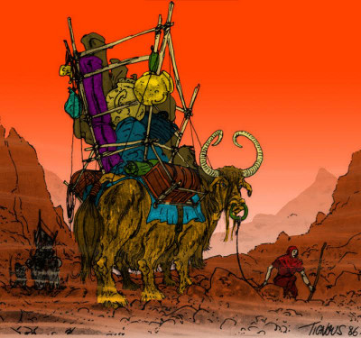

La Main qui travaille
C'est le quartier des artisans, là où les nombreuses matières premières importées à Laelith sont travaillées pour être ensuite revendues. Outre les ateliers courants pour toute grande ville, la particularité de la cité sainte et un de ses fleurons artisanal est la fabrication de souvenirs saints et la réplique de reliques. Une gourde d'eau bénite du Poisson d'argent, un briquet à silex de l'Oiseau de feu, une brique du Crâne, ou bien encore une plume de paon royal du Nuage sont parmi les objets les plus côtés auprès des pèlerins. Cette terrasse déborde d'activité le jour, mais la nuit certaines rues vont jusqu'à être fermées par des milices privées afin de protéger les ateliers, comme c'est le cas par exemple dans le quartier des bijoutiers. De toutes façons, de jour comme de nuit, la garde officielle veille attentivement et patrouille fréquemment.
La milice de cette terrasse porte des brassards de couleur café. Il y a 5 postes de gardes sur la Main qui travaille, mais l'un deux, celui de la Haute Guilde, ne surveille que ce bâtiment et la place des Sept royaumes.
→ Voir la carte interactive de Laelith.
Lieux particuliers
Ateliers du souvenir. C'est là que sont regroupés la plupart des artisans fabriquant des répliques de reliques saintes. Ce commerce est étroitement surveillé par les 4 temples.
Belvédère. Le plus beau point de vue sur toute la cité sainte et le lac d'Altalith, et l'un des rares endroits encore gratuit !
Guilde des cartographes [échelle des Quatre marchands]. Le grand maître de la guilde, Spugnor, est un vieux gnome expert en cartographie qui a beaucoup voyagé dans sa jeunesse. La guilde compte 20 membres, dont la moitié voyage à travers le monde pour cartographier et dessiner les lieux insolites et les passages dangereux.
Guildes de Laelith. La majorité des guildes corporatistes de Laelith ayant à voir avec l'artisanat (cordonnier, bijoutier, tanneur, verrier, ...) ont leur siège sur cette terrasse, et plus précisément autour de la place des Sept Royaumes.
Haute Guilde [place des Sept Royaumes]. Véritable institution, la Haute Guilde régule toutes les activités commerciales de la cité, allant même jusqu'à fixer les prix de tous les biens négociables. Voir la page consacrée pour plus de détails.
Jardins du dénuement. À l'origine un des plus beaux espaces verts de Laelith, ces jardins servaient également de cimetière au Lazaret. Mais petit à petit au cours des siècles ils ont été envahis par une population de démunis venus s'y installer faute de pouvoir se payer un autre gîte, et aujourd'hui les jardins ressemblent à un véritable bidonville. Mendiants, clochards, malades, rejetés et autres commerçants ruinés font de ces jardins un lieu à ne pas fréquenter, la plupart de ses habitants n'ayant plus grand chose à perdre.
La Strang. Communauté homosexuelle d'assassins spécialisés dans l'étranglement à l'aide d'un lacet. Leur chef est Domril Stango, un homme qui entretient de très bonnes relations avec le maître de la Haute Guilde. Il possède un salon particulier qu'il loue à l'année dans une annexe des Mille fleurs pour ses orgies.
Lazaret. Avant tout hôpital et hospice, c'est également pour la majorité des nouveaux venus à Laelith la première destination, afin d'y être révisés. Les bâtiments sud du Lazaret servent d'écurie et d'entrepôt. Voir la page consacrée pour plus de détails.
Palais de l'Eau lustrale [échelle des Quatre marchands]. C'est le plus grand des bains publiques de la cité. Réservé aux hommes les jours pairs et aux femmes les jours impairs, il est fréquenté par toutes les couches sociales de la population. Voir la page consacrée pour plus de détails.
Porte du l'Ivresse Enchanteresse. Condamnée depuis l'an 785 CV par mesure de sécurité.
Porte de l'Immense Solitude Septentrionale. L'accès principal à la cité par le Sud. Voir la page consacrée pour plus de détails.
Porte du Lazaret. L'accès à Laelith par la falaise de Vorn. Voir la page consacrée pour plus de détails.
Poste de garde du Lazaret. Un poste de garde à part, pour sa taille et pour le rôle important qu'il joue dans le contrôle des entrées en ville, et pour les mesures sanitaires exercées sur les gardes. Comme toutes les portes, il est géré par les soldats, et non pas par la garde.
Quartier des artistes. L'un des endroits les plus chauds de la vie culturelle de Laelith. C'est dans ce quartier au bord de l'Inlam que se retrouvent peintres, sculpteurs, architectes, danseurs et poètes : les artistes majeurs. Les autres, bateleurs, bardes, troubadours, musiciens et acteurs, se retrouvent plutôt du côté du théâtre, sur la Prospérité.
Rue des Chariots. L'une des rues les plus fréquentées et embouteillées de la cité, dû au fait que c'est l'unique passage entre les portes du Sud et la terrasse de la Prospérité praticable par des chariots, c'est-à-dire sans escaliers.
Temple de l'Oiseau de feu. Voir la page consacrée pour plus de détails.
Artisans
Quelques artisans de cette terrasse.
Armurier. Erasmus.
Armurier. Arthur Quarte.
Cordonnier [échelle des Cuirs]. Romuald Ripaton.
Dresseur d'animaux sauvages [rue basse des Chariots]. Larnaka (possède une ferme hors-ville).
Herboriste [échelle aux Philtres]. Sorbat le Schoum.
Joaillier. Ordener.
Luthier [échelle des Notes perdues]. Koshro.
Potier. Agrod.
Sculpteur. Yavel.
Scribe. Maître Gardalon.
Tailleur [37 échelle des Ateliers]. Erbeni.
Tisserand [échelle des Toits pointus]. Ebolor.
Auberges et tavernes
Quelques auberges et tavernes de cette terrasse.
Auberge des Anneaux [21 rue basse des Chariots]. Tenue par le halfelin Rouspi et sa famille. On y mange et on y dort bien. L'auberge ne sert pas d'alcool par contre.
Auberge Lebrethon [69 rue du Lyon]. Une très bonne adresse (spécialité l'andouillette) située au cœur de Laelith. L'auberge est tenue par Darthie, aidée de ses deux filles et de sa belle-fille. Le gendre des Lebrethon travaille comme guide à Laelith et accueille les nouveaux arrivants à leur sortie du Lazaret, leur proposant un petit tour de la ville et les invitant bien entendu à l'auberge du père Lebrethon au final. Voir la page consacrée pour plus de détails.
Taverne de l'Ancre [19 échelle des Quatre marchands]. Tenue par le demi-orc Karl Lagar Feld (le nom de ses deux parents qu'il a connu). La rumeur dit que cette taverne sert de lieu de rendez-vous à des voleurs, mais l'ambiance y est pourtant généralement paisible.
Taverne de la Chèvre d'argent. Tenue par une femme, Miranda, et ses deux fils. L'une des premières tavernes que l'on rencontre quand on sort du Lazaret. On y trouve fréquemment des numéros d'avaleuses de sabres et d'araignées danseuses d'Azilian.
Taverne de la Martre [222 échelle du Beurre]. Située en plein cœur du quartier des artistes, au bord de la faille, cette taverne est tenue par Piquetoile, un grand gaillard jovial qui se déplace torse nu afin que tous puissent admirer ses nombreux tatouages.
Personnalités
| Nom | Description | Lieu et Occupation |
|---|---|---|
| Nayël Lebrethon | Vieux, mari de Darthie | Architecte |
| Arthur Quarte | Adulte | Armurier |
| Erasmus | Adulte | Armurier |
| Rouspi | Halfelin, adulte | Aubergiste (auberge des Anneaux) |
| Célestine Lebrethon | Jeune, fille de Nayël Lebrethon | Aubergiste (auberge Lebrethon) |
| Darthie Lebrethon | Adulte, femme de Nayël | Aubergiste (auberge Lebrethon) |
| Ermeline Lebrethon | Jeune, fille de Nayël Lebrethon | Aubergiste (auberge Lebrethon) |
| Valentine Lebrethon | Jeune, femme de Léonidas | Aubergiste (auberge Lebrethon) |
| Karl Lagar Feld | Demi-orc, adulte | Aubergiste (taverne de l'Ancre) |
| Miranda | Adulte | Aubergiste (taverne de la Chêvre d'argent) |
| Piquetoile | Adulte | Aubergiste (taverne de la Martre) |
| Romuald Ripaton | Adulte | Cordonnier |
| Larnaka | Adulte | Dresseur |
| Columbau | Jeune, fiancé de Célestine Lebrethon | Fouineur |
| Atlas | Jeune, mari d'Ermeline Lebrethon | Guide |
| Spugnor | Vieux | Guilde des cartographes, Grand maître de la guilde |
| La Van Alfart | Vieux | Guilde des peintres, Grand maître de la guilde |
| Le Van Warol | Vieux | Guilde des peintres, Premier pinceau de la guilde |
| Gunther d'Armélie | Vieux | Haute Guilde, rahel du poste de garde de la Haute Guilde |
| Bofal | Adulte | Haute Guilde, chef archiviste |
| Caldis « le pointilleux » | Adulte | Haute Guilde, chef comptable |
| Ergalth | Demi-elfe, adulte | Haute Guilde, garde du corps de Gildas d'Elnor |
| Gildas d'Elnor | Adulte, amant de Laeticia Lunalia | Haute Guilde, Maître de la Haute Guilde |
| Sorbat le Schoum | Adulte | Herboriste |
| Léonidas Lebrethon | Jeune, fils de Nayël Lebrethon | Ingénieur hydraulique |
| Ordener | Adulte | Joailler |
| Domril Stango | Adulte | La Strang, chef de la guilde d'assassins |
| Koshro | Vieux | Luthier |
| Grender | Adulte, mari de Joend | Palais de l'Eau lustrale, accueil |
| Joend | Adulte, femme de Grender | Palais de l'Eau lustrale, accueil |
| Anterdj Kordath | Adulte | Palais de l'Eau lustrale, chef chauffeur |
| Berpad Cerdian | Adulte | Palais de l'Eau lustrale, chef comptable |
| Vernan Freccen | Adulte | Palais de l'Eau lustrale, directeur |
| Merrana Nerven | Adulte | Palais de l'Eau lustrale, responsable de l'étage |
| Agrod | Adulte | Potier |
| Gardalon | Vieux | Scribe |
| Yavel | Adulte | Sculpteur |
| Erbeni | Adulte, mari de Lyvia | Tailleur (vêtements) |
| Lyvia | Adulte, femme d'Erbeni | Tailleur (vêtements) |
| Ralis | Jeune, fils d'Erbeni | Tailleur (vêtements) |
| Vestis | Jeune, fils d'Erbeni | Tailleur (vêtements) |
| Anematès | Vieux | Temple de l'Oiseau de feu, Grand prêtre |
| Ebolor | Adulte | Tisserand |
Les ookhabs
À mi-chemin entre les bœufs et les mouflons, les ookhabs sont utilisés à l'ouest de Laelith où de multiples propriétaires, stationnant aux abords de l'impressionnant chemin qui serpente le long de la falaise de Vorn, les louent, aussi bien dans le sens de la montée que de la descente. Comme ils sont capables de porter de lourdes charges et qu'ils possèdent une adresse impressionnante sur les chemins montagneux, de nombreux voyageurs font appel à leurs services pour transporter leurs bagages, car les mules, les chevaux et les bœufs manquent trop de stabilité sur les terrains en pente.